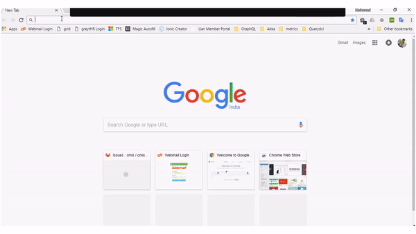

This project implements the Swagger REST API definitions for the OpenCMIS specifications. The models defined in types are used as properties and generate a dynamic swagger definition to consume it over HTTP REST. The below APIs are exposed for every type,
-
GET (/getAll) - Retrieve one or many objects.
-
POST - Insert a new `cmis:folder` or `cmis:document` or `cmis:item`
-
PUT - Update an existing object based on ObjectID.
-
DEL - Delete an existing object based on ObjectID.
This gives us very easy consumption in client applications using simple HTTP APIs. 